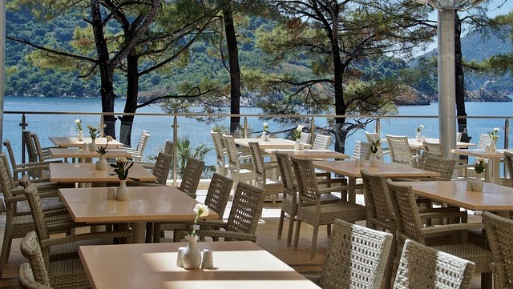
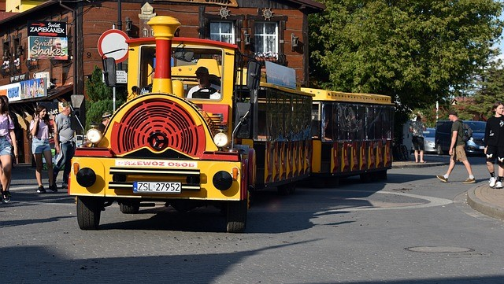

Savourez une pause gourmande dans notre restaurant éco-responsable. Profitez d’une cuisine locale et de saison dans un cadre verdoyant, idéal pour toute la famille. Un espace détente parfait pour recharger vos batteries tout en respectant la nature.
Découvrez les secrets du Zoo Arcadia avec nos guides passionnés. Plongez au cœur des habitats de nos animaux, apprenez leurs histoires et explorez les efforts de conservation déployés pour protéger ces espèces.

Embarquez à bord de notre petit train pour une visite ludique et confortable à travers les paysages du zoo. Un moyen unique et agréable de découvrir nos animaux et leurs habitats tout en profitant d’une balade relaxante.